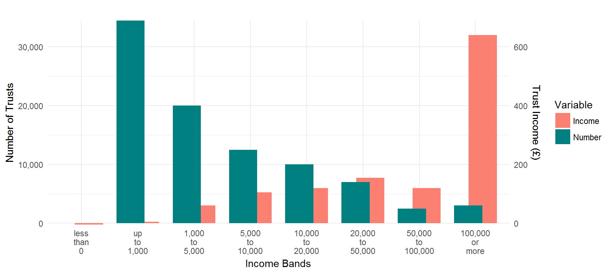
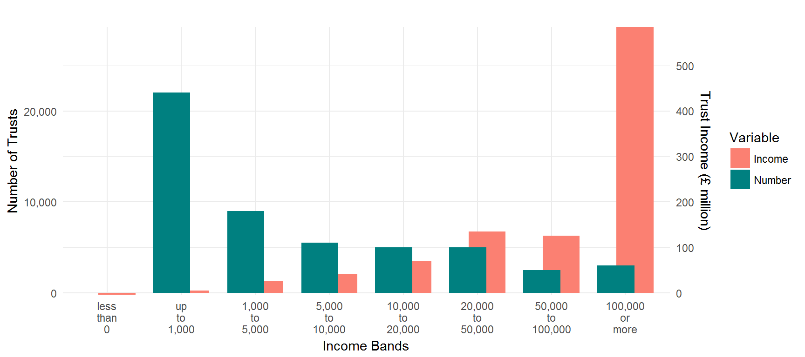

Coverage:
United Kingdom
Theme: The Economy
Released:
14 February 2019
Next release:
Autumn 2019
Frequency of release:
Annually
Media contact:
HMRC Press Office
03000 585 024
Statistical contacts:
Andrew Beacom
03000 593 579
andrew.beacom@hmrc.gsi.gov.uk
David McDonald
03000 561 367
david.mcdonald@hmrc.gsi.gov.uk
KAI Personal Taxes
HM Revenue and Customs
100 Parliament Street
London
SW1A 2BQ
Website: https://www.gov.uk/government/collections/trusts-statistics--2
Trusts Statistics
Number of trusts and estates making self-assessment returns, total tax paid by trusts and estates, total income by type of trust 2012-13 to 2016-17
Key findings in this release1
The number of trusts and estates for which a full self-assessment (SA) are required has fallen to 156,500 in 2016-17 from 163,500 in 2015-16. In the years covered by this publication the prevailing trend in the total number of trusts and estates has been one of declining numbers and this year represents the third consecutive annual fall in the number of these trusts and estates.
The decrease in the number of trusts and estates covered by these statistics may be a result of gradual changes in behaviour following an increase in the income tax rates applicable to trusts in 2004, which could make trusts less attractive. In addition, in 2010-11 the trust rate was increased to 50% (from 40%) and the dividend trust rate to 42.5% (from 32.5%). For 2013-14 to 2015-16 the trust rate and the dividend trust rate fell to 45% and 37.5% respectively; in 2016-17 the dividend trust rate was increased to 38.1%, and the dividend tax credit removed.
Tax year 2016-17 also saw the ending of the tax deduction scheme for interest and a reduction in the trust Capital Gains Tax (CGT) rates for all assets except for residential property, from 28% to 20%.
Total income reported in respect of trusts and estates fell by 17% from £2,900 million in 2015-16 to £2,400 million in 2016-17. This compares with £2,160 million in 2012-13, when income reported in respect of trusts and estates was at the lowest level for the period covered by this publication.
CGT liabilities for trustees rose slightly between 2015-16 and 2016-17, increasing by 2%, from £620 million to £635 million. Tax payable arising from capital gains has been volatile in recent years in part due to changes in taxation such as the introduction of new CGT rates for non-residential property.
About these statistics
This is a National Statistics publication produced by HM Revenue and Customs showing the number of full self-assessment returns made in respect of trusts and estates. Their income and tax paid is based on receipts information from HMRC’s administrative systems.2
Figures are updated annually and were last published in January 2018. Statistics for 2016-17 are included for the first time in the current publication. Figures for previous years have been revised due to availability of further data; see section 2.8 for further information about these revisions.
This publication contains two tables: 13.1 and 13.2. In these tables statistics are presented on an annual basis and cover years 2012-13 to 2016-17 and contain:
13.1) Number of trusts and estates which make a self-assessment return, income of trusts by type of income and type of trust, and tax from trusts by type of trust and type of tax
13.2) Number of trusts by type and their income, broken down by income band
Questions and feedback
HMRC are committed to providing impartial quality statistics that meet our users’ needs. We encourage our users to contact us so we can improve our statistics and identify gaps in them. If you would like to comment on these statistics or have any queries about the statistics please contact the statistician named at the start of this document.
Alternatively we would welcome any views you have using the link to the feedback form below. We will undertake to review user comments on a quarterly basis and use this information to influence the development of our statistics. We will summarise and publish user comments at regular intervals.
https://www.gov.uk/government/organisations/hm-revenue-customs/about/statistics#contact-us
1 Commentary
1.1 Summary of key statistics
- Latest data shows that 156,500 trusts and estates made self-assessment returns for tax year 2016-17, around 7,000 fewer than in 2015-16.
- Income of interest in possession trusts and trusts paying Income Tax at the special trust rates in 2016-17 totalled £2,180 million, 19% down on the previous year.
- Total Income Tax payable on income of trusts and estates in 2016-17 was £610 million. Of this, £130 million arose from interest in possession trusts and £445 million from trusts taxable at the special trust rates. The remainder arose from “Other” trusts, such as charities and non-trust structures, namely estates.
- For trusts paying tax at the trust rates, chargeable gains in 2016-17 were £1,460 million, representing a 16% rise on 2015-16; chargeable gains for interest in possession trusts were £1,450 million in 2016-17, 49% higher than in 2015-16.
- Capital Gains Tax payable on gains made by trusts and estates was £635 million in 2016-17, up 2% on 2015-16.
- The new Trust Registration Service had 28,500 registrations as of 31 January 2018 and 85,000 as of 5 March 2018.
1.2 Overall Trends
Figure 1: Total number of trusts and estates
Figure 1 shows that the total number of trusts and estates fell in 2016-17 representing a third year of consecutive declines. This continues the long term downward trend. In 2004-05 there were around 220,500 trusts and estates in the UK, which has fallen to around 156,500 in 2016-17. This corresponds to a drop of 29% over the past 13 years. There are several reasons why this trend is likely to have occurred, which are listed below.
- In 2004 the trust rate was increased from 34% to 40%, and in 2010 it was again increased from 40% to 50%; this may have made trusts less attractive.
- In 2013 the special tax rate for trusts was decreased to 45% partially reversing the increase to 50% in 2010.
- As a result of changes in 2006 a number of interest in possession trusts have been brought within the IHT relevant property regime.
- From 6 April 2005 the standard rate band was introduced, the size of the band was £500 for 2005-06 and £1,000 from 2006-07. Those trusts with income consistently below £1,000 no longer needed to complete a self-assessment tax return every year, if tax had been paid at source. From 2016/17 tax was no longer deducted from source on savings interest.
Figure 2: Number of trusts, and income of trusts paying tax at the special trust rates by band of income in 2016-17
 Figure 2 shows the number and income of trusts paying tax at the special trust rates. There were around 89,500 trusts paying Income Tax at the special trust rates in 2016-17. 39% had income of less than £1,000 which is similar to that observed in previous years. Only 3,000 trusts had income of more than £100,000 in 2016-17.
The total income of trusts paying Income Tax at the special trust rates was £1,200 million in 2016-17 down by around 23% compared with 2015-16 and the lowest since 2013-14. Trusts with income of more than £100,000 accounted for around 53% of the total income compared with 62% in 2015-16 and 58% in 2014-15.
Figure 3: Number of interest in possession trusts and income of these trusts by income band in 2016-17
 There were 51,500 interest in possession trusts in 2016-17. Figure 3 shows the distribution of these trusts by band of income. Around 42% of interest in possession trusts had income of less than £1,000, whilst around 3,000 trusts had income of more than £100,000.
Figure 4: Income of interest in possession trusts by type of income
Figure 4 shows the level of income from interest in possession trusts by type of income. Total income increased year on year to 2013-14 before falling in 2014-15; it returned to growth in 2015-16 before declining again in 2016-17. The decline in 2016-17 was due to a fall in dividend income, which saw a 29% fall coinciding with the removal of dividend tax credits.
The growth rate across the four years from 2012-13 to 2016-17 for total income was around 12%.
Figure 5: Income of trusts taxable at the special tax rates by type of income
Figure 5 shows the level of income by type of income for trusts paying Income Tax at the special rates. In 2016-17 the total income of trusts taxable at the special trust rates declined by around 23% from the previous year. This fall was driven by a 40% fall in dividend income coinciding with the removal of the dividend tax credit.
Between 2010-11 and 2012-13 a new additional higher rate of Income Tax of 50% (up from 40%) and a 42.5% dividend additional rate (up from 32.5%) for income above £1,000 were introduced. In 2013-14 the Income Tax rate was reduced to 45% and the dividend additional rate was reduced to 37.5%, the latter was then increased to 38.1% from 2016/17.
Figure 6: Tax payable on income of trusts
Figure 6 shows tax payable on income of trusts, split between different types of trust. Total Income Tax dipped sharply to £610m in 2016-17, a decline of 22% compared with 2015-16. Income from interest in possession trusts and trusts paying tax at the trusts rate declined by 14% and 23% respectively over the same period.
Figure 7: Number of interest in possession trusts by income band
Figure 7 shows the number of interest in possession trusts in each income band. Formerly, the majority of these trusts had income of less than £1,000, but this has changed in recent years. The number of trusts with income over £100,000 has increased year on year since 2012-13 rising to around 3,000 in 2016-17.
Figure 8: Number of trusts taxable at special trust rates of Income Tax by income band
Figure 8 shows the number of trusts paying Income Tax at the special trust rates by income band. 2016-17 saw a 6% decline in the number of trusts with under £10,000 of income from the previous year and a 10% fall over a five year timeframe.
The opposite is true for trusts with income above £10,000 which have seen their income increase by 5% compared to 2015-16 and by 19% when compared to 2012-13.
2 Background
2.1 What is a trust?
A trust is a legal arrangement which involves someone (the ‘settlor’) transferring their assets (the ‘trust property’) to one or more individuals or companies, or a combination of these (the ‘trustee’) who is made legally responsible for the assets. The trustee holds these assets for the benefit of one or more persons (the ‘beneficiaries’) identified individually or collectively by the settlor. The settlor’s wishes for the trust are usually written in their will or given in a legal document called the ‘trust deed’.
A trust can be established during the lifetime of the settlor, upon their death in the terms of their will or through operation of the intestacy laws (where no will has been made).
- The assets put (‘settled’) into a trust need not be money, they can also include land, buildings, shares, and other assets. The trust property may produce income such as interest, dividends or rental income, or gains if the assets are sold. The way the income is taxed will depend on the type of trust and type of income.
-
There are a number of reasons for setting up trusts, including:
- To control and protect family assets
- When someone is too young to handle their affairs
- When someone cannot handle their affairs because they are incapacitated
- To pass on money or property while the settlor is still alive
- To pass on money or assets when the settlor dies, under the terms of their will
- Under the rules of inheritance that apply when someone dies without leaving a valid will (England and Wales only)
2.2 Types of trust
These statistics mainly cover two types of UK resident trusts where trustees make self-assessment returns, these are:
- Interest in possession (IIP) trusts
- Discretionary/accumulation trusts
They also cover a limited number of overseas trusts where trustees have a UK tax liability and specific non-family trusts such as unauthorised unit trusts and employee benefit trusts. They do not cover specialist vehicles, such as Venture Capital Trusts or Authorised Unit Trusts, which are treated as companies. For more information about Venture Capital Trusts and Authorised Unit Trusts, refer to the GOV.UK website:
http://www.hmrc.gov.uk/manuals/vcmmanual/index.htm
http://www.hmrc.gov.uk/cisc/auth_fund-trust.htm
For further information about all types of trusts see the GOV.UK website Trusts pages:
https://www.gov.uk/personal-tax/trusts
2.2.1 Interest in possession trusts
An ‘interest in possession’ trust is one where the beneficiary is entitled to trust income as it arises. The trustee must pass on all the income received, less any trustees’ expenses, to the beneficiary.
The beneficiary who receives income (the ‘income beneficiary’) often doesn’t have any rights over the capital held in such a trust. The capital will normally pass to a different beneficiary or beneficiaries in the future. Depending on the terms of the trust, the trustees might have the power to pay capital to a beneficiary even though that beneficiary only has a right to receive income.
2.2.2 Discretionary/accumulation trusts 3
A discretionary trust is one where trustees have ‘discretion’ about how to use the income of the trust, and sometimes the capital. Trustees may be able to decide:
- How much income or capital is paid out
- Which beneficiaries to make payments to
- How often the payments are made
Discretionary trusts can be used to provide income or capital for beneficiaries who are not capable or responsible enough to deal with money by themselves, or perhaps to cover a future need that may not yet be known (e.g. when one beneficiary requires more financial assistance than other beneficiaries at a particular point in time). The extent of the trustees’ discretion depends on the terms of the trust deed.
Most discretionary trusts will also have a power to accumulate income, that is, instead of paying it out to beneficiaries, the trustees may add it to trust capital. More unusually, a trust may require the trustees to accumulate all income and not pay it out. Such an ‘accumulation’ trust can be used to build capital. Discretionary/accumulation trusts are taxed on income at the special trust rates.
2.2.3 Mixed trusts
A mixed trust is one where the income is taxable on more than one basis. This may be because there are distinct different parts to the trust fund so that income is always held in different trusts. Alternatively changes to the trust may occur depending on the beneficiaries’ circumstances. For example, two children benefit from a discretionary/accumulation trust. According to the terms of the trust deed, the beneficiaries are entitled to a share of the trust income when they reach 18. The first child reaches 18 while the second is still 14. The part of the trust benefiting the first child becomes an interest in possession trust, while the part that benefits the second child remains a discretionary/accumulation trust until they reach 18. In other words, when the first child reaches 18 the trust becomes a mixed trust.
2.3 Income Tax payable on income of trusts
Trustees are responsible for declaring and paying Income Tax on income received in their capacity as a trustee. This is declared each year on a Trust and Estate Tax Return, part of the self-assessment process.
The beneficiary of a trust must declare any trust income they receive or are entitled to on their personal tax return, non self-assessment beneficiaries may reclaim tax using form R40. As a beneficiary it’s important to understand the type of trust, as the tax rules vary according to the trust type. Guidance for beneficiaries on paying and reclaiming tax on trusts is available on the GOV.UK website:
https://www.gov.uk/trusts-taxes/beneficiaries-paying-and-reclaiming-tax-on-trusts
The Income Tax payable on trusts is dependent on the type of trust. Tax treatment broadly falls into two categories: the taxation of interest in possession trusts, and taxation of discretionary/accumulation trusts.
2.3.1 Income Tax payable on interest in possession trusts
There are different tax rates depending on the type of income. The table below shows applicable tax rates in each year covered in this publication.| Type of income | Tax rate in tax years 2012-13 to 2016-17 |
|---|---|
| Rent, trading, savings | 20% (basic rate) |
| UK dividends (e.g. income from stocks and shares) | 10% (dividend ordinary rate) |
| 7.5% (from 2016-17) | |
In some instances special trust rates of tax may apply. See the GOV.UK website for further information: https://www.gov.uk/trusts-taxes
2.3.2 Income Tax payable on discretionary/accumulation trusts
Income arising to the trustees of discretionary / accumulation trusts is taxed at the special trust rates apart from the first £1,000 of trust income which is known as the ‘standard rate band’.
If a settlor has more than one trust the standard rate band is divided by the number of trusts the settlor has to a minimum of £200. The tables below show applicable tax rates in each year covered in this publication.
Trust income up to £1,000 - these rates apply to discretionary / accumulation trusts 4| Type of income | Tax rate in tax year 2012-13 to 2016-17 |
|---|---|
| Rent, trading, savings | 20% (basic rate) |
| UK dividends (e.g. income from stocks and shares) | 10% (dividend ordinary rate) |
| 7.5% (from 2016-17) | |
Trust income over £1,000 - these rates apply to discretionary / accumulation trusts
| Type of income | Tax rate in tax year 2012-13 | Tax rate in tax years 2013-14 to 2015-16 | Tax rate in tax year 2016-17 |
|---|---|---|---|
| Rent, trading, savings | 50% (trust rate) | 45% (trust rate) | 45% (trust rate) |
| UK dividends (e.g. income from stocks and shares) | 42.5% (dividend trust rate) | 37.5% (dividend trust rate) | 38.1% (dividend trust rate) |
In mixed trusts, the income from each part of the trust will be taxed under the rules that apply to that type of trust.
Budget 2009 announced the introduction of a new additional higher rate of Income Tax of 50% and a 42.5% dividend additional rate for income above £1,000 with effect from 2010-11 onwards. As a consequence of this change, from 2010-11 onwards the trust rate of tax was increased to 50% (from 40%) and the dividend trust rate to 42.5% (from 32.5%).
For 2013-14, the trust rate and the dividend trust rate fell to 45% and 37.5% respectively, in 2016-17 the dividend trust rate was increased to 38.1%.
Up until 2015-16 dividend payments were eligible for a 10% tax credit; this was removed in 2016-17. As this credit had previously been counted in trust dividend income, its removal is a component of the lower dividend income figures reported in this publication.
2.4 Capital Gains Tax and trusts
Capital Gains Tax (CGT) is a tax on the gain in the value of an asset. A trust may have to pay CGT if assets are sold, given away or exchanged and have gone up in value since being put into the trust. The trust will only have to pay the tax if the assets have increased in value above a certain allowance, the ‘annual exempt amount’. For more information about trusts and CGT see the gov.uk website:
https://www.gov.uk/trusts-taxes/trusts-and-capital-gains-tax
There is no difference between tax treatment for interest in possession and other trusts. The trust rate in each year covered by this publication is shown in the table below. From 2016-17 a new lower CGT trust rate was applied to gains occurring outside of residential property.| Tax year | Gapial gains trust tax rate |
|---|---|
| 2008-09 | 18% |
| 2009-10 | 18% |
| 2010-11 | 18% |
| 2010-115 | 28% |
| 2011-12 | 28% |
| 2012-13 | 28% |
| 2013-14 | 28% |
| 2014-15 | 28% |
| 2015-16 | 28% |
| 2016-17 | 28% (residential property) |
| 20% (other property, assets and gains) | |
2.5 What information does this publication cover?
The statistics on the income and capital gains of trustees and personal representatives are drawn from data captured from all those trusts and estates that complete the Trust and Estate Self-Assessment tax return (SA900).
Trusts and estates which hold only non-income producing assets will not in general be part of the self-assessment regime and therefore will not be covered by the tables. The statistics are derived from data captured by the end of December 2018 and should cover the majority of returns expected for 2016-17 and previous years.
Tables 13.1 and 13.2 identify interest in possession and discretionary/accumulation trusts separately because of differences in tax treatment. Table 13.1 does not provide a detailed analysis of the estates and charities that make self-assessment returns; although the table does indicate the total number of returns from this group (categorised as ‘other’ trusts and estates).
Table 13.1 provides statistics on the numbers of trusts and estates making self-assessment returns in each year since 2012-13, it also provides statistics on the total income and chargeable gains declared in respect of these trusts and estates, by type of income and type of trust or estate. Finally the table shows the Income Tax and Capital Gains Tax paid, split by type of trust or estate.
Amounts of chargeable gains and amounts of Capital Gains Tax are also published in table 14.2 of the Capital Gains Tax statistics. There are some differences between figures published in table 13.1 and figures published in table 14.2. Differences in chargeable gains figures relate to coverage. Table 14.2 shows gains for all trusts and estates and table 13.1 only shows chargeable gains for interest in possession and trusts paying Income Tax at the trust rate. Differences in Capital Gains Tax figures relate to the timing of production of statistics, and availability of later data. A link to table 14.2 is provided below:
https://www.gov.uk/government/statistics/capital-gains-tax-statistics
Table 13.2 shows a breakdown by income band of the numbers of trusts and estates making self-assessment returns (where income bands are defined as total income excluding capital gains). The table also shows the distribution of total income across trusts and estates in different income bands.
The EU Fourth Money Laundering Directive requires Member States to create and maintain a central register of trusts, or trust like structures, which generate tax consequences in the Member State. A trust with a UK tax liability in relation to trust assets or income must register on the Trust Registration Service by 31 January following the end of the tax year in which the liability occurred.
In 2017 HMRC launched the ‘Trusts Registration Service’. This publication for the first time contains data on the number of registrations captured under this service.
2.6 Who might be interested in this publication?
These tables are likely to be of interest to policy makers in government, academics, think tanks and other research bodies, and journalists. They would be of use to individuals or organisations interested in the number of trusts and estates, income generated within a trust or estate as well as tax raised in respect of trusts and estates in the latest year for which data is available, and trends over time.
2.7 Rounding
The amounts shown in the tables have been rounded to the nearest £5 million and numbers have been rounded to the nearest 500 (with the exception of the category of “less than £0” in table 13.2).
2.8 Revisions strategy and revisions made in this publication
This publication includes figures for 2016-17 for the first time plus revised figures for earlier years back to 2012-13, reflecting any self-assessment tax returns for these years received since statistics were last published and changes to the way the data has been extracted from self-assessment administrative systems.
The table below shows changes since last publication. Numbers may not sum due to rounding.
| 2012-13 | 2013-14 | 2014-15 | 2015-16 | ||
|---|---|---|---|---|---|
| Change | Number of trusts and estates | 0 | 500 | 2,500 | 5,000 |
| Percentage change | 0.0% | 0.3% | 1.5% | 3.2% | |
| Change (£ million) | Total Income Tax | 0 | 0 | 5 | 5 |
| Percentage change | 0.0% | 0.0% | 0.7% | 0.6% | |
| Change (£ million) | Total Capital Gains Tax | 0 | 0 | 0 | 10 |
| Percentage change | 0.0% | 0.0% | 0.0% | 1.6% | |
3 Tables
Table 13.1
Numbers of trusts in the UK
| 2012-13 | 2013-14 | 2014-15 | 2015-16 | 2016-17 | |
|---|---|---|---|---|---|
| Interest in possession trusts | 56,500 | 59,000 | 56,500 | 54,500 | 51,500 |
| Trusts paying tax at the trust rate | 93,500 | 95,500 | 93,500 | 93,000 | 89,500 |
| Other (esates, charitable trusts, etc.) | 14,500 | 17,500 | 17,000 | 16,000 | 15,500 |
| Total | 164,500 | 171,500 | 167,000 | 163,500 | 156,500 |
Income of trusts by type of income and type of trust
| 2012-13 | 2013-14 | 2014-15 | 2015-16 | 2016-17 | |||
|---|---|---|---|---|---|---|---|
| Interest in possession trusts | Dividend income | 340 | 425 | 445 | 595 | 420 | |
| Interest income | 95 | 100 | 80 | 75 | 75 | ||
| Income from property | 315 | 305 | 305 | 320 | 330 | ||
| Other income | 120 | 140 | 125 | 145 | 155 | ||
| Total income | 875 | 970 | 955 | 1,135 | 980 | ||
| Chargeable gains | 585 | 875 | 1,870 | 975 | 1,450 | ||
| Trusts paying tax at the trust rate | Dividend income | 535 | 700 | 740 | 940 | 565 | |
| Interest income | 150 | 135 | 150 | 110 | 105 | ||
| Income from property | 275 | 285 | 295 | 295 | 310 | ||
| Other income | 160 | 180 | 170 | 215 | 220 | ||
| Total income | 1,120 | 1,305 | 1,350 | 1,560 | 1,200 | ||
| Chargeable gains | 615 | 1,005 | 935 | 1,260 | 1,460 | ||
| Other (estates, charitable trusts, etc.) | Total income | 165 | 180 | 180 | 205 | 220 | |
| Chargeable gains | 105 | 175 | 240 | 190 | 275 | ||
Tax due by type of trust
| 2012-13 | 2013-14 | 2014-15 | 2015-16 | 2016-17 | ||
|---|---|---|---|---|---|---|
| Income Tax | 650 | 675 | 735 | 785 | 610 | |
| Of which: | Interest in possession trusts | 145 | 160 | 155 | 175 | 130 |
| Trusts paying tax at the trust rate | 475 | 485 | 545 | 575 | 445 | |
| Capital Gains Tax | 345 | 545 | 805 | 620 | 635 | |
Notes on Tables in 13.1:
- Because some returns are filed late, statistics for the most recent year will be marginally less complete than for earlier years.
- This table includes all trusts and estates making a Self Assessment return. Trusts which do ont make a Self Assessment return are not captured in the table.
- Numbers are given to the nearest 500 and amounts are given to the nearest £5 million, which may cause small discrepancies in totals.
- Total income and capital gains tax revenues include tax paid by estates and non-standard trusts. Statistics relate to tax accrued in the respective year.
Table 13.2
Number of trusts by income band and type of trust
| Type of Trust | Income Band | 2012-13 | 2013-14 | 2014-15 | 2015-16 | 2016-17 |
|---|---|---|---|---|---|---|
| Interest in possession trusts | less than 0 | <500 | <500 | <500 | <500 | <500 |
| up to 1,000 | 27,500 | 30,000 | 28,000 | 26,500 | 22,000 | |
| 1,000 to 5,000 | 10,000 | 9,500 | 9,000 | 8,500 | 9,000 | |
| 5,000 to 10,000 | 5,500 | 5,500 | 5,500 | 5,000 | 5,500 | |
| 10,000 to 20,000 | 5,000 | 5,000 | 4,500 | 4,500 | 5,000 | |
| 20,000 to 50,000 | 4,500 | 4,500 | 4,500 | 4,500 | 5,000 | |
| 50,000 to 100,000 | 2,000 | 2,000 | 2,000 | 2,000 | 2,500 | |
| 100,000 or more | 2,000 | 2,500 | 2,500 | 2,500 | 3,000 | |
| Trusts paying tax at the trust rate | less than 0 | <500 | <500 | <500 | <500 | <500 |
| up to 1,000 | 36,000 | 38,000 | 36,500 | 36,500 | 34,500 | |
| 1,000 to 5,000 | 24,500 | 23,500 | 23,000 | 21,500 | 20,000 | |
| 5,000 to 10,000 | 14,000 | 13,500 | 14,000 | 13,500 | 12,500 | |
| 10,000 to 20,000 | 9,000 | 9,000 | 9,500 | 10,000 | 10,000 | |
| 20,000 to 50,000 | 5,500 | 6,000 | 6,000 | 6,500 | 7,000 | |
| 50,000 to 100,000 | 2,000 | 2,500 | 2,500 | 2,500 | 2,500 | |
| 100,000 or more | 2,000 | 2,500 | 2,500 | 3,000 | 3,000 | |
Income of trusts by income band and type of trust
| Type of Trust | Income Band | 2012-13 | 2013-14 | 2014-15 | 2015-16 | 2016-17 |
|---|---|---|---|---|---|---|
| Interest in possession trusts | less than 0 | -15 | -15 | -30 | -15 | -5 |
| up to 1,000 | 5 | 5 | 5 | 5 | 5 | |
| 1,000 to 5,000 | 25 | 25 | 25 | 25 | 25 | |
| 5,000 to 10,000 | 40 | 40 | 40 | 35 | 40 | |
| 10,000 to 20,000 | 65 | 65 | 65 | 65 | 70 | |
| 20,000 to 50,000 | 125 | 125 | 125 | 125 | 135 | |
| 50,000 to 100,000 | 115 | 120 | 115 | 115 | 125 | |
| 100,000 or more | 520 | 605 | 615 | 780 | 585 | |
| Trusts paying tax at the trust rate | less than 0 | -5 | -5 | -5 | -5 | -5 |
| up to 1,000 | 5 | 5 | 5 | 5 | 5 | |
| 1,000 to 5,000 | 70 | 70 | 65 | 65 | 60 | |
| 5,000 to 10,000 | 100 | 100 | 100 | 100 | 105 | |
| 10,000 to 20,000 | 120 | 120 | 120 | 125 | 120 | |
| 20,000 to 50,000 | 155 | 160 | 160 | 165 | 155 | |
| 50,000 to 100,000 | 110 | 120 | 125 | 135 | 120 | |
| 100,000 or more | 565 | 740 | 780 | 975 | 640 | |
Notes on Tables in 13.2:
- Because some returns are filed late, statistics for the most recent year will be marginally less complete than for earlier years.
- This table includes all trusts and estates making a Self Assessment return. Trusts which do ont make a Self Assessment return are not captured in the table.
- Numbers are given to the nearest 500 and amounts are given to the nearest £5 million, which may cause small discrepancies in totals.
- The standard rate band was introduced from April 2005. Those trusts with income below this level and where tax has been deducted at source no longer need to complete a Self Assessment return every year. Tthe size of the band was £500 for 2005/06 and £1,000 for 2006/07.
Annex A: Data sources, methodology and data quality
Data sources
Statistics are compiled using information on self-assessment tax returns. This information is contained on HMRC’s departmental administrative system CESA (Computerised Environment for Self-Assessment). This is an administrative data source; no sampling of data is required in order to produce these statistics.
A data mart is created each month containing all information on CESA at that time. The data mart created at the end of December 2018 has been used to produce these statistics.
The date for submitting self-assessment returns to HMRC depends on the way in which returns are sent. Returns completed on paper are due for return on 31 October following the end of the relevant tax year, and returns completed online are due on 31 January following the end of the tax year. Information from the tax return is not included within the trusts statistics until the year after returns are due. This means that the bulk of tax returns are available for all years for which statistics are published. However, returns continue to be received or updated after the return due dates so figures in all years are liable to change when statistics are updated.
Trusts that do not require completion of a self-assessment return are not captured within these statistics.
Methodology
The trust statistics are compiled using aggregated information collected in the trust and estates pages of the self-assessment return. The 2016-17 return is available on line here:
https://www.gov.uk/government/publications/self-assessment-trust-and-estate-tax-return-sa900
The count of trusts is based on the number of completed tax returns on the CESA data mart.
Income figures are collated from information supplied on tax returns.
The tax calculation is applied to information on tax returns and tax figures are derived by selecting stages from the calculation. The 2016-17 tax calculation guide is available online here:
https://www.gov.uk/government/publications/self-assessment-trust-and-estate-tax-return-sa900
The tax return and tax calculation will vary from year to year.
Data quality
The quality of these statistics is assessed against the six European Statistical Service dimensions of quality developed by Eurostat to ensure they are appropriate for publication. A summary of adherence with each dimension is published here:
https://www.gov.uk/government/statistics/quality-report-trusts
All numbers presented in this statistical release refer to trusts and estates that are required to complete a self-assessment return. Trusts and estates that are not required to complete a self-assessment are not included in these figures.↩
We sometimes refer to tax being payable by the trust, and at the special trust rates. This is for ease of language. Tax is paid by the trustees, and when appropriate at the special rates for trustees’ income/gains.↩
Throughout this publication the phrase ‘Discretionary trust’ is used interchangeably with ‘Trusts paying tax at the trust rates’.↩
May also apply to IIP trusts if the trustees receive deemed income which is taxable at the special trust rates↩
From June 2010 the capital gains tax rate is increased to 28%. For more information on capital gains tax rates please see https://www.gov.uk/government/collections/capital-gains-tax-statistics
↩